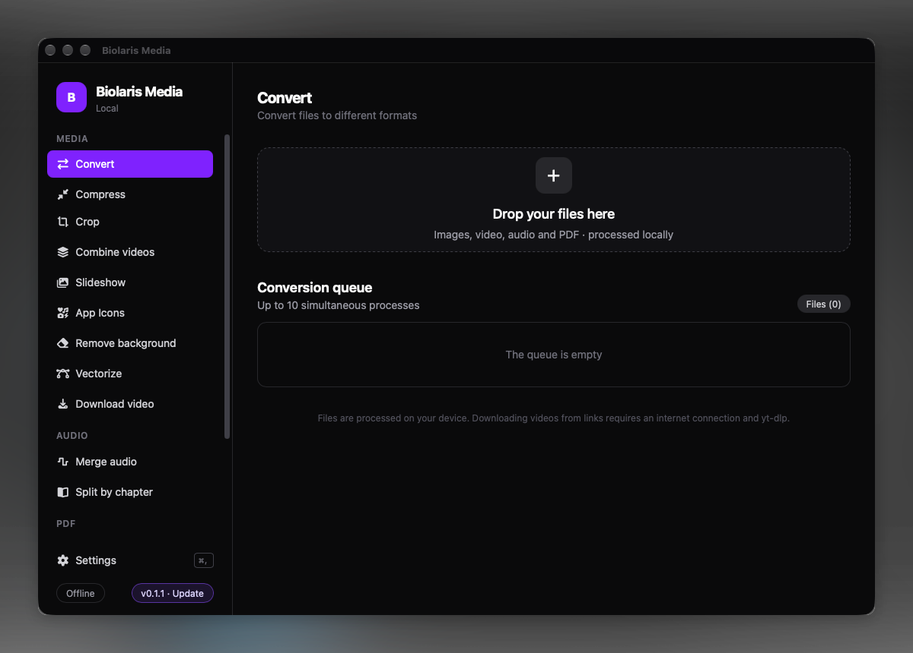

Media tools, kept on your desktop.
A local-first desktop toolbox for converting, compressing, and working with media files, images, and PDFs. No cloud, no account — everything runs on your machine.


